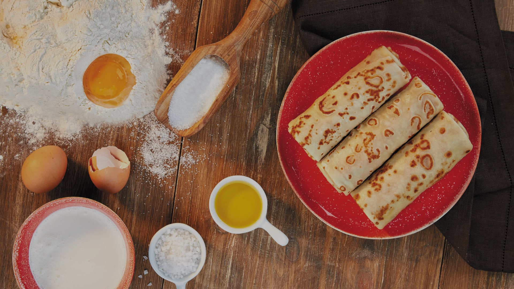

«Теремок» — сеть ресторанов русской кухни формата «Фаст-Кэжуал», С 1998 года мы радуем наших посетителей по-домашнему вкусными и свежими блюдами русской кухни.

Натуральность
1. Мы готовим только из натуральных продуктов: никаких заменителей или продуктовых аналогов.
2. Тесто замешивается на натуральных сливках, а не на растительных жирах.
3. Для сырников используется творог, а не «творожный продукт».
4. Блины выпекаются на натуральном подсолнечном, а не на пальмовом масле.
5. По такому же принципу мы выбираем поставщиков, поэтому наши овощи — сочные и ароматные, мясо — вкусное и питательное, рыба — нежная и аппетитная.
Люди
На нашей кухне только квалифицированные повара, поэтому качество и вкус блюд гарантированы! Мы по достоинству ценим опыт и мастерство сотрудников, а они разделяют наши ценности и готовят для вас с теплом и любовью